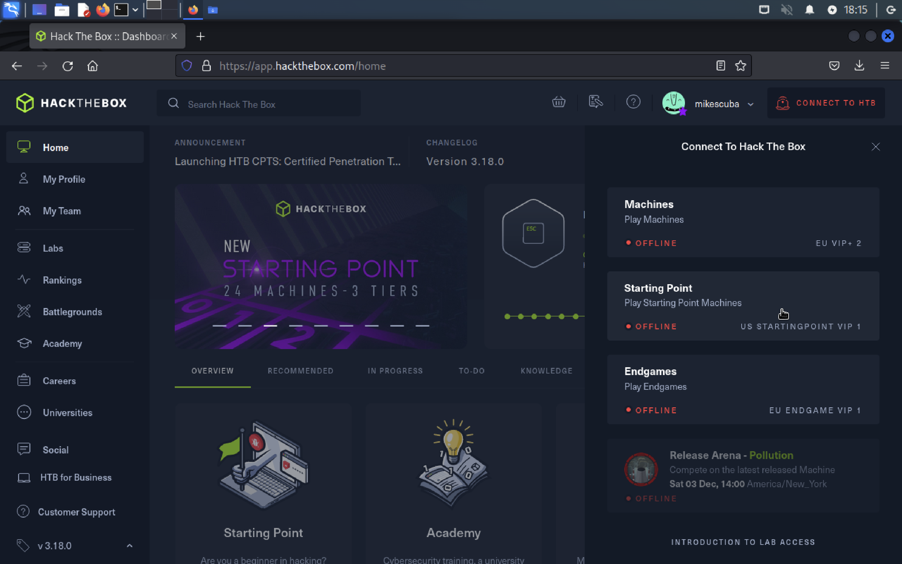
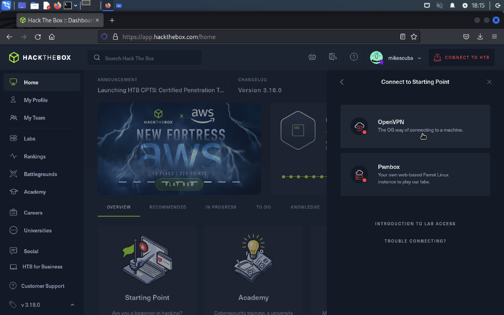
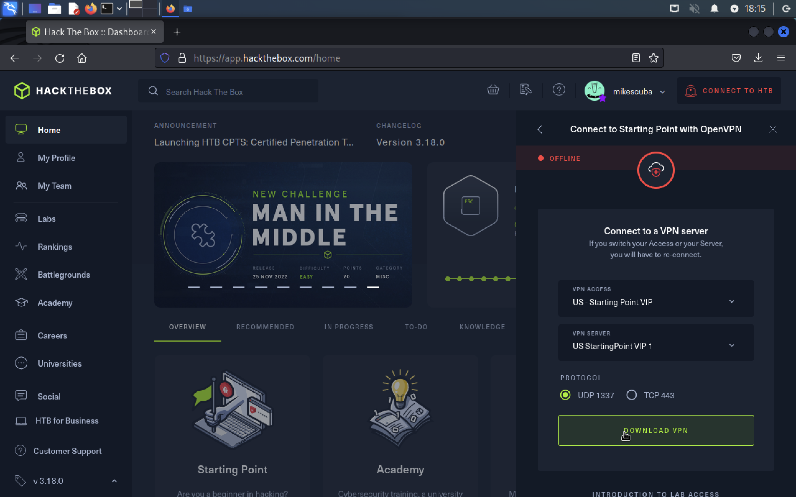
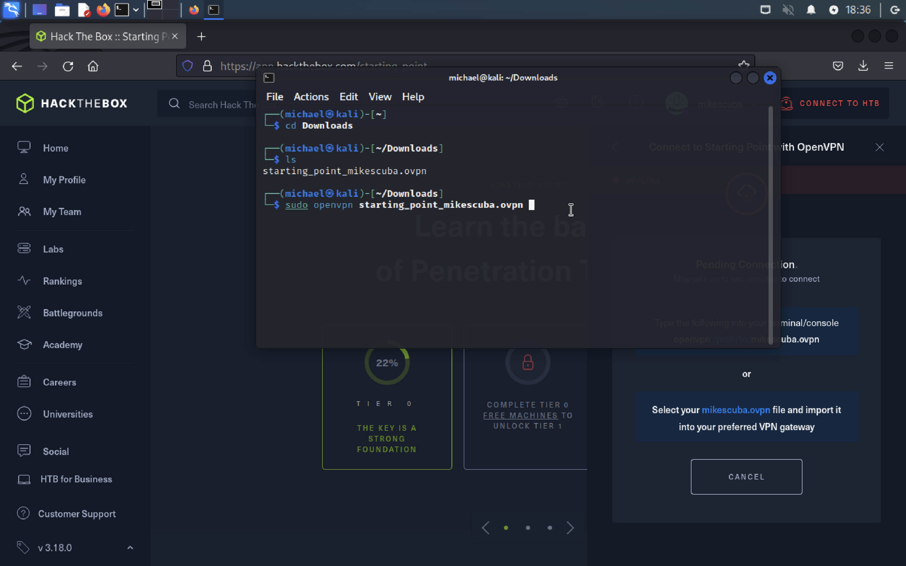
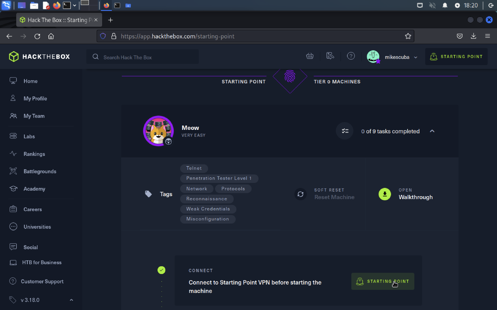
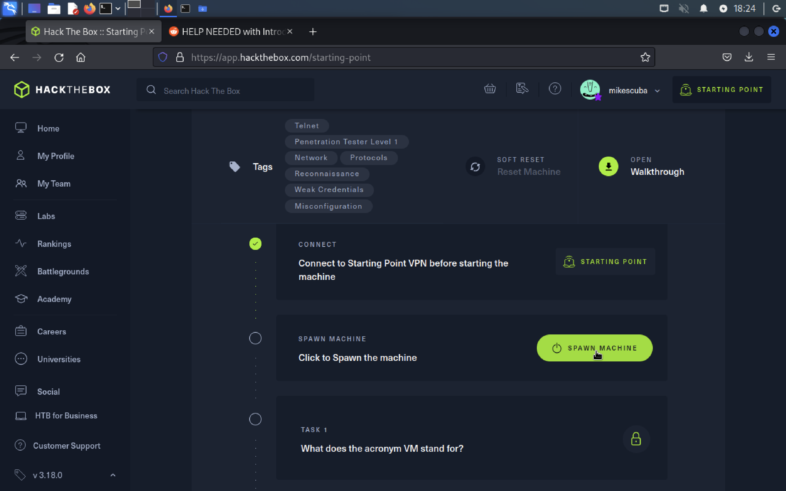
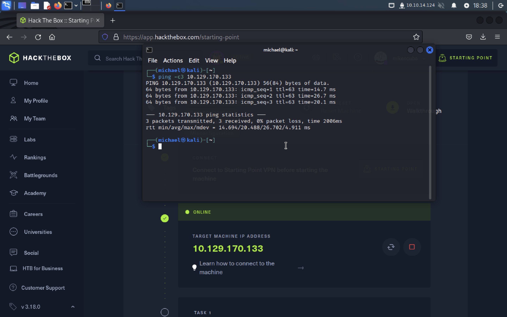
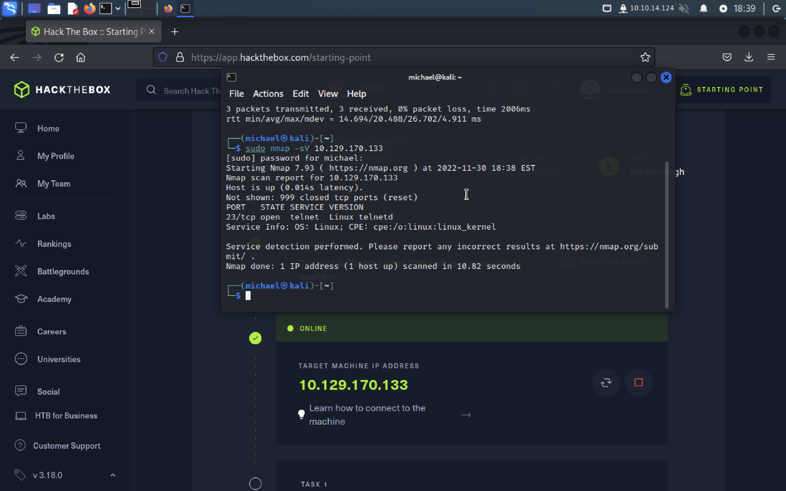

Do everything within YOUR VM

Log in, click connect in the top right. Starting point is where you want to begin

OpenVPN should already be installed on KALI. A VPN will put you on the same subnet as the target, allowing network access

Download the config file

in terminal: move to location and verify its name, make sure to include sudo when starting your connection...i forgot to take a screenshot of the results, but make sure its says something like "sucessful"

pick a easy machine to start, you should have a green check by "connect to VPN"

spawn the target, make take a minute or two

i like to ping the machine to ensure im on the VPN and the target in spawned. the "-c3" parameter will return 3 responses if sucessful

HINT a good first step is to run nmap, we found an open TCP port 23 for telnet
